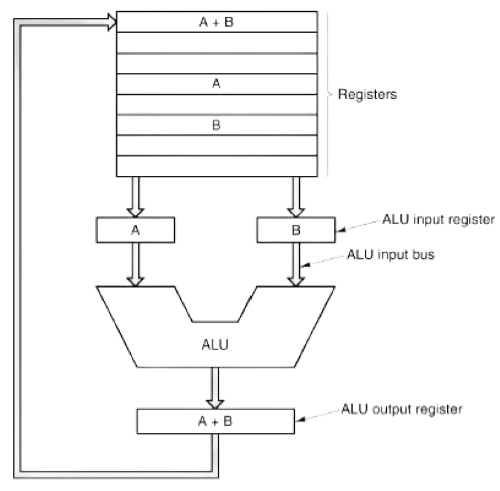

I registri della CPU sono piccole memorie super veloci dentro al
processore. Servono a memorizzare temporaneamente i dati e le
istruzioni che la CPU sta usando, così da lavorare più
velocemente. Ecco i tipi principali:
1. ACCUMULATORE: dove si fanno i calcoli.
2. CONTATORE DI PROGRAMMA: indica alla CPU dove andare
per l'istruzione successiva.
3. REGISTRO DI ISTRUZIONE: contiene l'istruzione che la
CPU sta eseguendo.
4. REGISTRI GENERICI: piccoli "cassetti" per tenere i
dati temporanei.
5. REGISTRO DI STATO: segnala alla CPU condizioni
particolari, come errori.
6. STACK POINTER: indica l'ultimo dato nello "stack", in
una zona di memoria speciale per le funzioni.
7. BASE POINTER: aiuta a trovare facilmente i dati nello
stack.
In breve, questi registri aiutano la CPU a lavorare rapidamente
e senza interruzioni.
